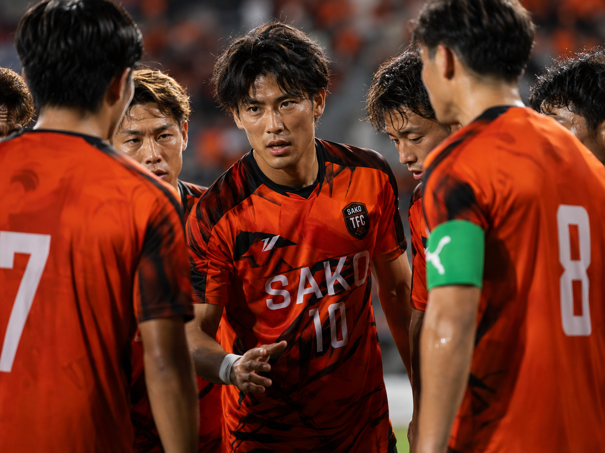

01 / TOP
TOP
高校生以上栄生をホームタウンとして活動するトップチーム。名古屋市社会人リーグに参戦し、日々昇格を目指して活動しています。

ABOUT TOP
地域を盛り上げる、
栄生TFCのトップチーム。
CATEGORY高校生以上
競技志向でサッカーに取り組む選手が活動しています。
LEAGUE名古屋市社会人リーグ
リーグ戦に参戦し、昇格を目標に活動しています。
COMMUNITY栄生をホームタウンに
サッカーを通じて地域を盛り上げるクラブを目指します。
CLUB VISION
幼少期からシニアまで、
サッカーでつながる地域クラブへ。
トップチームだけでなく、JUNIOR YOUTH・JUNIORの育成年代も展開しています。世代を越えてサッカーを楽しみ、地域に根ざしたクラブとして活動を続けます。
3カテゴリーを見る →体験・入団について、
まずはお気軽にご相談ください。
体験練習・入団・その他のお問い合わせを、ひとつのフォームから受け付けています。